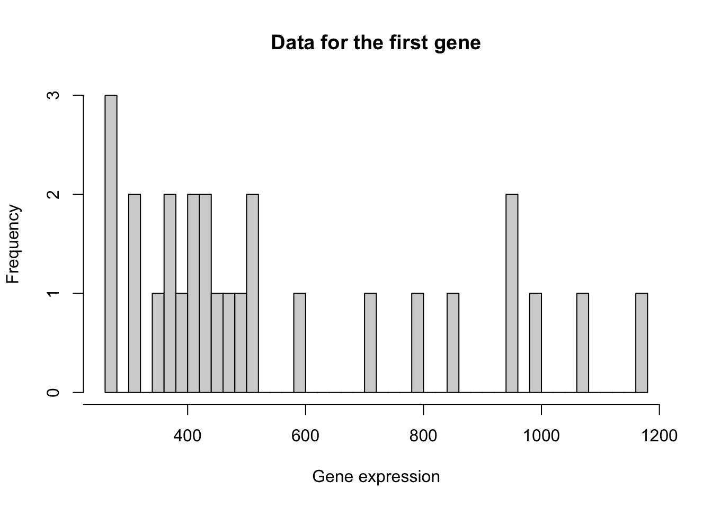

In this lecture we will start working with a real bulk RNA-seq dataset from Haglund et al. (2012). After importing the data, we will be working our way through four major challenges which, together, will form a full RNA-seq differential expression (DE) analysis pipeline where the result of our analysis will be a(n ordered) list of genes that we find to be differently expressed between our conditions of interest. The four main challenges we will look into are
We will be importing this dataset using the data package parathyroidSE from Bioconductor.
## Installing package into '/Users/runner/work/_temp/Library'
## (as 'lib' is unspecified)##
## The downloaded binary packages are in
## /var/folders/24/8k48jl6d249_n_qfxwsl6xvm0000gn/T//RtmpqxXDWW/downloaded_packagesif(!"SummarizedExperiment" %in% installed.packages()){
BiocManager::install("SummarizedExperiment")
} ## 'getOption("repos")' replaces Bioconductor standard repositories, see
## '?repositories' for details
##
## replacement repositories:
## CRAN: https://cloud.r-project.org## Bioconductor version 3.12 (BiocManager 1.30.16), R 4.0.5 (2021-03-31)## Installing package(s) 'BiocVersion', 'SummarizedExperiment'## also installing the dependencies 'zlibbioc', 'bitops', 'matrixStats', 'XVector', 'RCurl', 'GenomeInfoDbData', 'MatrixGenerics', 'GenomicRanges', 'Biobase', 'BiocGenerics', 'S4Vectors', 'IRanges', 'GenomeInfoDb', 'DelayedArray'##
## The downloaded binary packages are in
## /var/folders/24/8k48jl6d249_n_qfxwsl6xvm0000gn/T//RtmpqxXDWW/downloaded_packages## installing the source package 'GenomeInfoDbData'## Old packages: 'boot', 'class', 'cluster', 'KernSmooth', 'lattice', 'MASS',
## 'Matrix', 'mgcv', 'nnet', 'spatial', 'survival'# install package if not installed.
if(!"parathyroidSE" %in% installed.packages()) BiocManager::install("parathyroidSE")## 'getOption("repos")' replaces Bioconductor standard repositories, see
## '?repositories' for details
##
## replacement repositories:
## CRAN: https://cloud.r-project.org## Bioconductor version 3.12 (BiocManager 1.30.16), R 4.0.5 (2021-03-31)## Installing package(s) 'parathyroidSE'## installing the source package 'parathyroidSE'## Old packages: 'boot', 'class', 'cluster', 'KernSmooth', 'lattice', 'MASS',
## 'Matrix', 'mgcv', 'nnet', 'spatial', 'survival'## Loading required package: SummarizedExperiment## Loading required package: MatrixGenerics## Loading required package: matrixStats##
## Attaching package: 'MatrixGenerics'## The following objects are masked from 'package:matrixStats':
##
## colAlls, colAnyNAs, colAnys, colAvgsPerRowSet, colCollapse,
## colCounts, colCummaxs, colCummins, colCumprods, colCumsums,
## colDiffs, colIQRDiffs, colIQRs, colLogSumExps, colMadDiffs,
## colMads, colMaxs, colMeans2, colMedians, colMins, colOrderStats,
## colProds, colQuantiles, colRanges, colRanks, colSdDiffs, colSds,
## colSums2, colTabulates, colVarDiffs, colVars, colWeightedMads,
## colWeightedMeans, colWeightedMedians, colWeightedSds,
## colWeightedVars, rowAlls, rowAnyNAs, rowAnys, rowAvgsPerColSet,
## rowCollapse, rowCounts, rowCummaxs, rowCummins, rowCumprods,
## rowCumsums, rowDiffs, rowIQRDiffs, rowIQRs, rowLogSumExps,
## rowMadDiffs, rowMads, rowMaxs, rowMeans2, rowMedians, rowMins,
## rowOrderStats, rowProds, rowQuantiles, rowRanges, rowRanks,
## rowSdDiffs, rowSds, rowSums2, rowTabulates, rowVarDiffs, rowVars,
## rowWeightedMads, rowWeightedMeans, rowWeightedMedians,
## rowWeightedSds, rowWeightedVars## Loading required package: GenomicRanges## Loading required package: stats4## Loading required package: BiocGenerics## Loading required package: parallel##
## Attaching package: 'BiocGenerics'## The following objects are masked from 'package:parallel':
##
## clusterApply, clusterApplyLB, clusterCall, clusterEvalQ,
## clusterExport, clusterMap, parApply, parCapply, parLapply,
## parLapplyLB, parRapply, parSapply, parSapplyLB## The following objects are masked from 'package:stats':
##
## IQR, mad, sd, var, xtabs## The following objects are masked from 'package:base':
##
## anyDuplicated, append, as.data.frame, basename, cbind, colnames,
## dirname, do.call, duplicated, eval, evalq, Filter, Find, get, grep,
## grepl, intersect, is.unsorted, lapply, Map, mapply, match, mget,
## order, paste, pmax, pmax.int, pmin, pmin.int, Position, rank,
## rbind, Reduce, rownames, sapply, setdiff, sort, table, tapply,
## union, unique, unsplit, which.max, which.min## Loading required package: S4Vectors##
## Attaching package: 'S4Vectors'## The following object is masked from 'package:base':
##
## expand.grid## Loading required package: IRanges## Loading required package: GenomeInfoDb## Loading required package: Biobase## Welcome to Bioconductor
##
## Vignettes contain introductory material; view with
## 'browseVignettes()'. To cite Bioconductor, see
## 'citation("Biobase")', and for packages 'citation("pkgname")'.##
## Attaching package: 'Biobase'## The following object is masked from 'package:MatrixGenerics':
##
## rowMedians## The following objects are masked from 'package:matrixStats':
##
## anyMissing, rowMedianslibrary(SummarizedExperiment)
# import data
data("parathyroidGenesSE", package="parathyroidSE")
# rename for convenience
se <- parathyroidGenesSE
rm(parathyroidGenesSE)TODO: look into paper for exp design. Possibly take screenshot and try to decipher together with students.
y <- assays(se)$counts[1,]
hist(y, breaks = 40,
xlab = "Gene expression",
xaxt = "n", yaxt = "n",
main = "Data for the first gene")
axis(1, at = seq(200, 1200, by=200))
axis(2, at = 0:3)
Start with challenges below, and make a section for each. This will simultaneously follow a full RNA-seq analysis pipeline.
Following code should be part of a next file where we start working with RNA-seq data, show the mean-variance trend, discuss normalization, and introduce a DE analysis.
Goals:
In this lecture, we will introduce working with count data, using a real bulk RNA-seq dataset
Defer to normalization.
Defer to when talking about dim red.